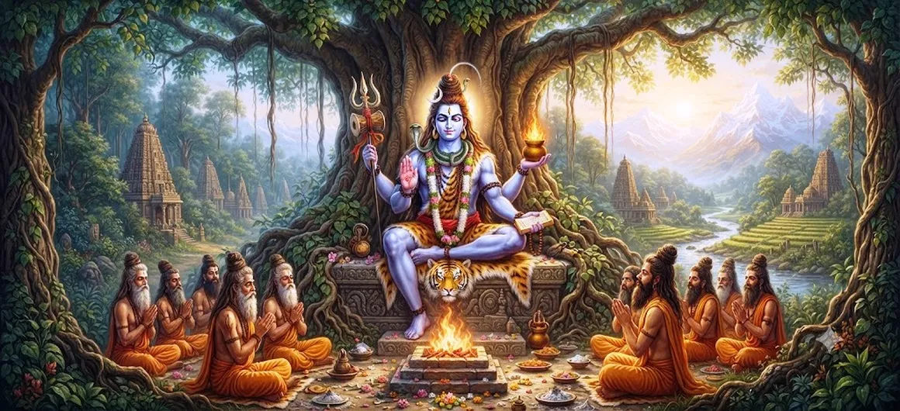

शिव का पिप्पलाद अवतार
शतरुद्र संहिता का अध्याय 24 पवित्र कथा प्रस्तुत करता है भगवान शिव का पिप्पलाद अवतार। यह अभिव्यक्ति जारी है दिव्य प्रकटों का वह क्रम जिसके माध्यम से शिव अपना प्रकटीकरण करते हैं दुनिया में अनुग्रह, शक्ति और उद्देश्य।
पिप्पलाद की अभिव्यक्ति चिंतन का एक और अवसर प्रदान करती है सर्वोच्च भगवान एक विशेष रूप और व्यक्तित्व के माध्यम से कैसे प्रकट हो सकते हैं जबकि वही दिव्य वास्तविकता बनी हुई है।
अध्याय शिव के बैल अवतार का अनुसरण करता है और एक कथा शुरू करता है जो अगले अध्याय में जारी है, पिप्पलादा अवतार शिव - भाग 2.
अध्याय 24 की मुख्य बातें
पिप्पलादा अवतार
पिप्पलाद के रूप में भगवान शिव की पवित्र अभिव्यक्ति का अन्वेषण करता है।
ईश्वरीय कृपा
शिव की दयालु और उद्देश्यपूर्ण प्रकृति को दर्शाता है अभिव्यक्तियाँ
दिव्य अभिव्यक्ति
शिव की असीम दिव्य उपस्थिति का एक और आयाम दिखाता है।
आध्यात्मिक अनुशासन
भक्ति, अनुशासन, दृढ़ संकल्प और आध्यात्मिक को प्रोत्साहित करता है जागरूकता.
भक्ति
भगवान शिव की सच्ची भक्ति और स्मरण पर जोर देता है।
आध्यात्मिक उद्देश्य
शिव के पीछे के दिव्य उद्देश्य पर चिंतन को आमंत्रित करता है अवतार.
इस अध्याय में मुख्य विषय
पिप्पलाद अवतार का परिचय
पिप्पलादा अवतार इस क्रम में एक और पवित्र अध्याय बनाता है शिव की दिव्य अभिव्यक्तियाँ। इस अवतार के माध्यम से, शतरुद्र संहिता भगवान की उपस्थिति की एक और अभिव्यक्ति प्रस्तुत करती है और उद्देश्य.
शिव की अभिव्यक्तियाँ किसी एक रूप तक सीमित नहीं हैं। प्रत्येक उपस्थिति भक्तों को इसके एक अलग पहलू पर विचार करने की अनुमति देती है सर्वोच्च भगवान और उनकी उपस्थिति से जुड़ा दिव्य उद्देश्य।
शिव की दिव्य अभिव्यक्ति
पिप्पलाद की उपस्थिति शिव की स्वतंत्रता को दर्शाती है ईश्वरीय प्रयोजन के अनुसार प्रकट होता है। परम भगवान प्रकट हो सकते हैं उन रूपों के माध्यम से जो शिक्षण, सुरक्षा के साधन बन जाते हैं, आध्यात्मिक मार्गदर्शन, या दिव्य इरादे की पूर्ति।
इसलिए भक्त को बाहरी रूप से परे देखने के लिए प्रोत्साहित किया जाता है और इसके माध्यम से व्यक्त दिव्य वास्तविकता पर चिंतन करें।
पिप्पलाद स्वरूप का महत्त्व
पिप्पलाद रूप किसी के भीतर शिव की उपस्थिति के चिंतन को आमंत्रित करता है विशिष्ट पवित्र व्यक्तित्व. ईश्वरीय अवतार शाश्वत बनाता है सर्वोच्च भगवान की उपस्थिति एक विशेष कथा के माध्यम से सुलभ है और आध्यात्मिक यात्रा.
भक्तों के लिए स्वरूप का महत्व केवल इसी में नहीं है आख्यान ही नहीं बल्कि आध्यात्मिक सिद्धांतों में भी हो सकता है इसके माध्यम से चिंतन किया गया.
शिव के प्रकट होने का उद्देश्य
शतरुद्र संहिता, शिव की संपूर्ण पवित्र कथाओं में अभिव्यक्तियों को परमात्मा की उद्देश्यपूर्ण अभिव्यक्ति के रूप में प्रस्तुत किया जाता है होगा. पिप्पलादा अवतार इस व्यापक पैटर्न को जारी रखता है।
भगवान का स्वरूप भक्तों को याद दिलाता है कि दैवीय कृपा हो सकती है अप्रत्याशित परिस्थितियों और रूपों के माध्यम से कार्य करें।
इसलिए जो एक सामान्य कथा प्रतीत होती है उसमें एक शामिल हो सकता है भक्ति के माध्यम से देखने पर गहरा आध्यात्मिक उद्देश्य।
भक्ति और आध्यात्मिक अनुशासन
ईश्वरीय अवतार की कथा सहज ही भक्त को अपनी ओर आकर्षित करती है शिव का स्मरण. ऐसा स्मरण जुड़ने पर सार्थक हो जाता है ईमानदार आचरण, अनुशासन, विनम्रता और विश्वास के साथ।
आध्यात्मिक अनुशासन का मतलब केवल बाहरी अनुष्ठान नहीं है। यह भी इसमें अपने कार्यों को नियंत्रित करना, इरादे की शुद्धता विकसित करना शामिल है, और परमात्मा की याद बनाए रखना।
ईश्वरीय कृपा एवं मार्गदर्शन
पिप्पलाद के रूप में शिव की अभिव्यक्ति पर विचार किया जा सकता है याद दिलाएं कि ईश्वरीय कृपा व्यक्ति का मार्गदर्शन करने में सक्षम है उन परिस्थितियों के माध्यम से जो प्रारंभ में कठिन प्रतीत हो सकती हैं या अनिश्चित.
भक्त के लिए आस्था का अर्थ है धर्म मार्ग पर चलते रहना इस बात पर भरोसा करना कि अंतिम परिणाम आने पर भी ईश्वर मौजूद रहता है अभी तक दिखाई नहीं दे रहा है.
आध्यात्मिक पाठ
पिप्पलाद कथा भक्त को पहचानने के लिए प्रोत्साहित करती है दृढ़ संकल्प और आध्यात्मिक जागरूकता का महत्व. दिव्य कथाएँ ये केवल अतीत के वृत्तांत नहीं हैं; वे दर्पण बन सकते हैं जिससे स्वयं के आचरण और आध्यात्मिक स्थिति की जांच की जाती है।
जब विश्वास के साथ धैर्य भी हो तो भक्ति और भी मजबूत हो जाती है। अनुशासन, और ईमानदार प्रयास।
इसलिए यह अध्याय पाठक को आंतरिक शक्ति विकसित करने के लिए आमंत्रित करता है महादेव के समक्ष विनम्र रहते हुए।
बैल अवतार के साथ संबंध
अध्याय 23 में शिव के बैल अवतार पर जोर देते हुए प्रस्तुत किया गया है दैवीय शक्ति, स्थिरता, सुरक्षा, और का चिंतन धर्म.
अध्याय 24 अब एक बार दिखाते हुए पिप्पलाद अभिव्यक्ति की ओर बढ़ता है फिर से शिव की दिव्य उपस्थिति को विभिन्न माध्यमों से व्यक्त किया जा सकता है पवित्र आख्यान की आवश्यकताओं और उद्देश्यों के अनुसार रूप दिया जाता है।
भाग 2 में निरंतरता
पिप्पलाद अवतार की कथा इस प्रकार जारी है अध्याय. अध्याय 25, शिव का पिप्पलाद अवतार - भाग 2, पवित्र वृत्तान्त को आगे बढ़ाता है।
पाठकों को इसका अनुसरण करने के लिए अगले अध्याय को जारी रखने के लिए प्रोत्साहित किया जाता है इस दिव्य आख्यान की पूर्ण प्रगति।
अध्याय 24 पर चिंतन
पिप्पलादा अवतार भक्तों को कई तरीकों पर विचार करने के लिए आमंत्रित करता है जिसमें परमात्मा सृष्टि की कहानी में प्रवेश कर सकता है। शिव का अभिव्यक्तियाँ हमें याद दिलाती हैं कि सर्वोच्च वास्तविकता को सीमित नहीं किया जा सकता है एक ही बाहरी रूप में।
इसलिए एक भक्त विनम्रता, विश्वास और के साथ कहानी को अपना सकता है भीतर गहरे आध्यात्मिक संदेश की खोज करने की इच्छा दिव्य आख्यान.
अध्याय 24 की मुख्य शिक्षाएँ
दिव्य उपस्थिति
शिव की उपस्थिति कई पवित्र रूपों के माध्यम से प्रकट हो सकती है।
भक्ति
सच्ची भक्ति मन को ईश्वर से जोड़े रखती है।
अनुशासन
आध्यात्मिक अनुशासन विश्वास और आंतरिक जागरूकता को मजबूत करता है।
ईश्वरीय उद्देश्य
प्रत्येक दिव्य अभिव्यक्ति का एक पवित्र उद्देश्य होता है।
आध्यात्मिक जागरूकता
पवित्र आख्यान ईश्वर के प्रति गहरी जागरूकता को प्रोत्साहित करते हैं।
विश्वास और धैर्य
विश्वास धैर्य, स्मरण और सच्चे प्रयास से बढ़ता है।
आध्यात्मिक चिंतन
शिव का पिप्पलाद अवतार भक्त को याद दिलाता है कि ईश्वर स्वयं को रूपों और परिस्थितियों के माध्यम से प्रकट कर सकता है एक गहरा आध्यात्मिक उद्देश्य. इसलिए साधक को साधना करनी चाहिए विनम्रता और पवित्र में निहित पाठों के प्रति चौकस रहें आख्यान। आस्था को अनुशासन, धैर्य और का समर्थन करना चाहिए महादेव का हार्दिक स्मरण. जब भक्ति स्थिर हो जाती है, सम हो जाती है जीवन की बदलती परिस्थितियाँ अवसर बन सकती हैं आध्यात्मिक विकास और ईश्वर के प्रति गहरी जागरूकता।
अध्याय 24 का संदेश जीना
इस अध्याय के संदेश को विकसित कर दैनिक जीवन में लागू किया जा सकता है धैर्य, सच्ची भक्ति और अपने कार्यों के प्रति जागरूकता।
एक भक्त प्रत्येक दिन की शुरुआत शिव के स्मरण और प्रयास से कर सकता है ईमानदारी, नम्रता और अनुशासन के साथ जिम्मेदारियाँ निभाएँ।
अनिश्चितता के क्षणों में, महादेव में विश्वास आंतरिकता प्रदान कर सकता है नेक रास्ते पर चलते रहने के लिए स्थिरता की जरूरत है।
प्रमुख आध्यात्मिक अवधारणाएँ
सर्वोच्च भगवान जिनकी दिव्य अभिव्यक्तियाँ तदनुसार प्रकट होती हैं पवित्र उद्देश्य.
इस अध्याय में पवित्र अभिव्यक्ति को भाग के रूप में प्रस्तुत किया गया है शिव का दिव्य क्रम.
प्रेमपूर्ण भक्ति स्मरण, विश्वास और ईमानदारी के माध्यम से व्यक्त की गई आचरण.
वह धर्म मार्ग जो आचरण और आध्यात्मिक जीवन का मार्गदर्शन करता है।
दैवीय कृपा जो भक्त का मार्गदर्शन और समर्थन करती है।
निःस्वार्थ सेवा विनम्रता और भक्ति के साथ की गई।
अध्याय सारांश
शतरुद्र संहिता अध्याय 24 पिप्पलाद अवतार प्रस्तुत करता है शिव. यह अध्याय शिव की दिव्यता के पवित्र क्रम को जारी रखता है बैल अवतार के बाद की अभिव्यक्तियाँ। के माध्यम से पिप्पलादा प्रकटीकरण, भक्तों को दिव्य चिंतन के लिए आमंत्रित किया जाता है उद्देश्य, अनुग्रह, भक्ति, अनुशासन, विश्वास और आध्यात्मिक जागरूकता। कथा अध्याय 25, पिप्पलादा अवतार में जारी है शिव का - भाग 2, पवित्र विवरण को और अधिक प्रकट करने की अनुमति देता है।
अक्सर पूछे जाने वाले प्रश्न
①अध्याय 24 का मुख्य विषय क्या है?
मुख्य विषय भगवान शिव का पिप्पलाद अवतार और है इस दिव्य अभिव्यक्ति का आध्यात्मिक महत्व.
② पिप्पलादा अवतार क्या दर्शाता है?
यह एक और पवित्र अभिव्यक्ति का प्रतिनिधित्व करता है जिसके माध्यम से भक्त शिव की दिव्य उपस्थिति, उद्देश्य, अनुग्रह और पर विचार कर सकते हैं आध्यात्मिक मार्गदर्शन.
③ इस अध्याय में किन आध्यात्मिक गुणों पर जोर दिया गया है?
भक्ति, अनुशासन, धैर्य, विश्वास, विनम्रता, आध्यात्मिक जागरूकता, और ईश्वरीय कृपा में विश्वास केंद्रीय विषय हैं।
④ अध्याय 24 अध्याय 23 से कैसे जुड़ता है?
अध्याय 23 शिव के बैल अवतार को प्रस्तुत करता है, जबकि अध्याय 24 पिप्पलादा अवतार के साथ क्रम जारी है।
⑤ शिव के पिप्पलाद अवतार के बाद क्या आता है?
अगला अध्याय शिव का पिप्पलाद अवतार - भाग 2 है।
“जहां भक्ति स्थिर है और विश्वास सच्चा है, वहां महादेव की कृपा होती है वह प्रकाश बन जाता है जो आध्यात्मिक पथ का मार्गदर्शन करता है।
शतरुद्र संहिता के माध्यम से जारी रखें
अध्याय 23, शिव का बैल अवतार, से अध्याय तक जारी रखें 24, शिव का पिप्पलाद अवतार। फिर अध्याय 25 पर आगे बढ़ें, शिव का पिप्पलाद अवतार - भाग 2, पवित्रता को जारी रखने के लिए कथा.